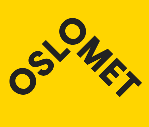

| Studiested Pilestredet i Oslo |
Varighet 3 år |
Omfang Heltid |
Studiepoeng 180 |
| Studiestart August |
Undervisningsspråk Norsk Engelsk |
Studieplasser 40 |
Informasjon om program, timeplaner, pensum, fadderuker og mye mer finner du på studiestartsiden for matematisk modellering og datavitenskap - ingeniør (student.oslomet.no). NB! Vær obs på at timeplanen som ligger på studiestartsiden er en timeplan for alle studentene på kullet. For å se din personlige timeplan må du logge deg inn på "Min side" (student.oslomet.no) etter at du har aktivert IT-kontoen din og du er blitt plassert i klasse/gruppe. Dette skjer vanligvis uken før studiestart.
For å søke på dette programmet må du ha
generell studiekompetanse (samordnaopptak.no) eller oppfylle kravene til realkompetanse
matematikk R1 og R2
fysikk 1
Det kan være konkurranse om plassene. Ved forrige opptak kom alle kvalifiserte søkere inn.
Hvis du mangler generell studiekompetanse eller enkelte fag fra videregående skole, kan du søke på dette studiet om du har bestått ettårig forkurs for ingeniørutdanning.